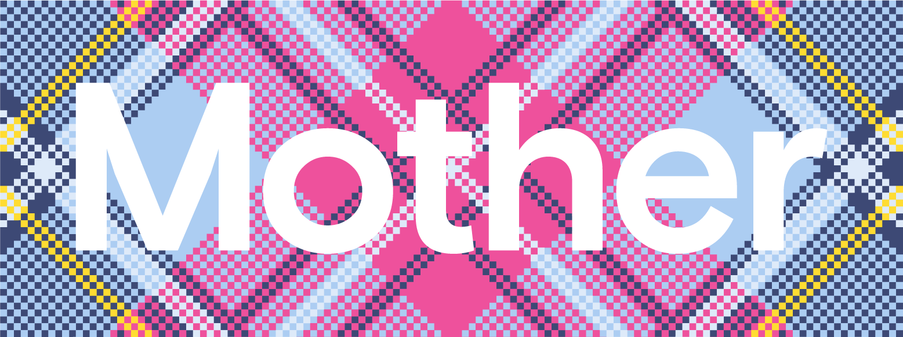
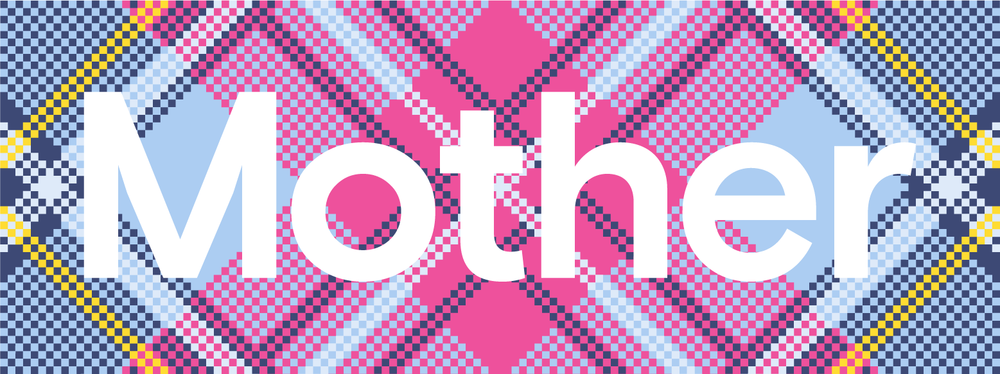

Awards & Press
Campaign Media Awards Gold
Innovation Award - The Drum Awards
5 x British Arrows Nominations
Visionary Arts Awards TV Advert of the Year Nomination
First Prize - Ocean Digital Creative Competition 2022
Cream 2021
Cream 2020
The Drum Ad of the Day
Campaign Magazine
The Mirror
The Daily Mail
Edinburgh News
Refinery29
The Scotsman
Elle France
Vogue UK